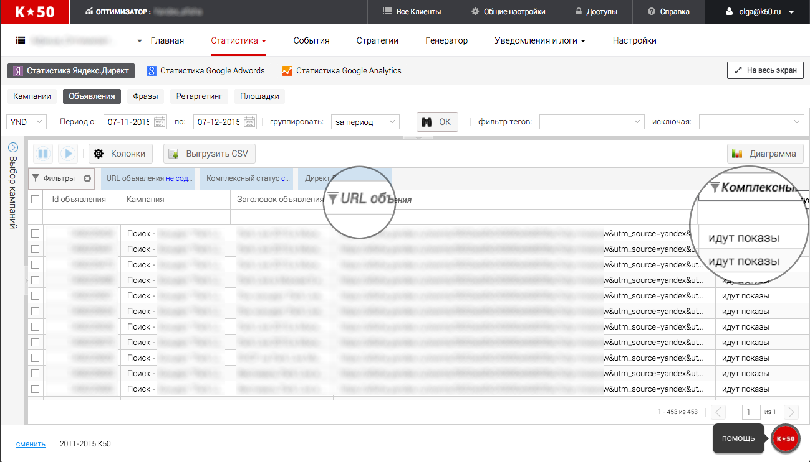
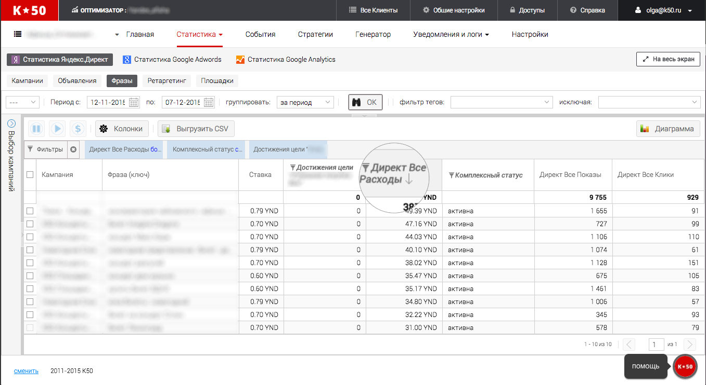
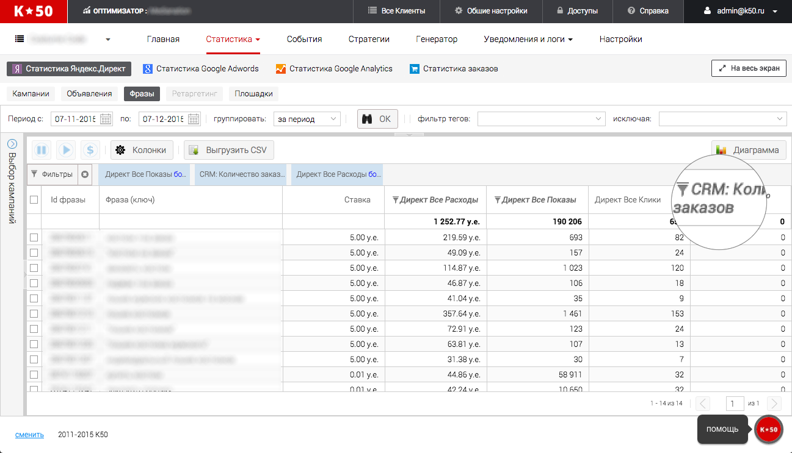
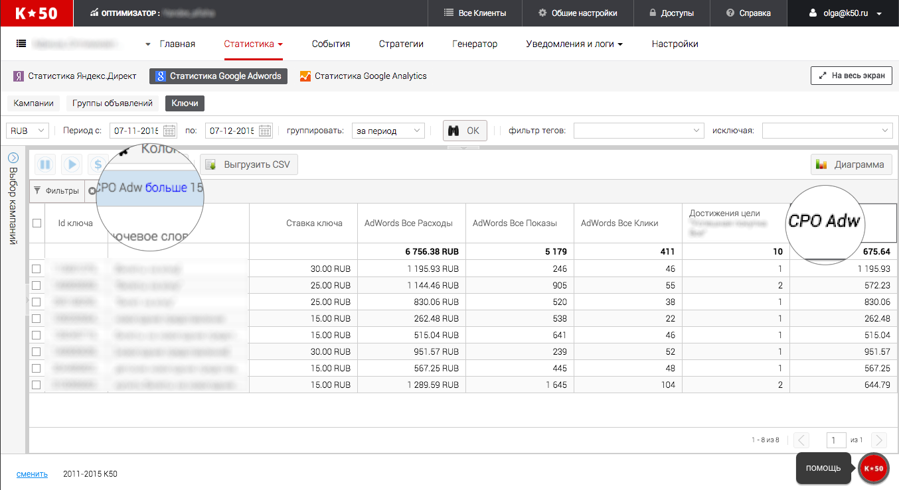
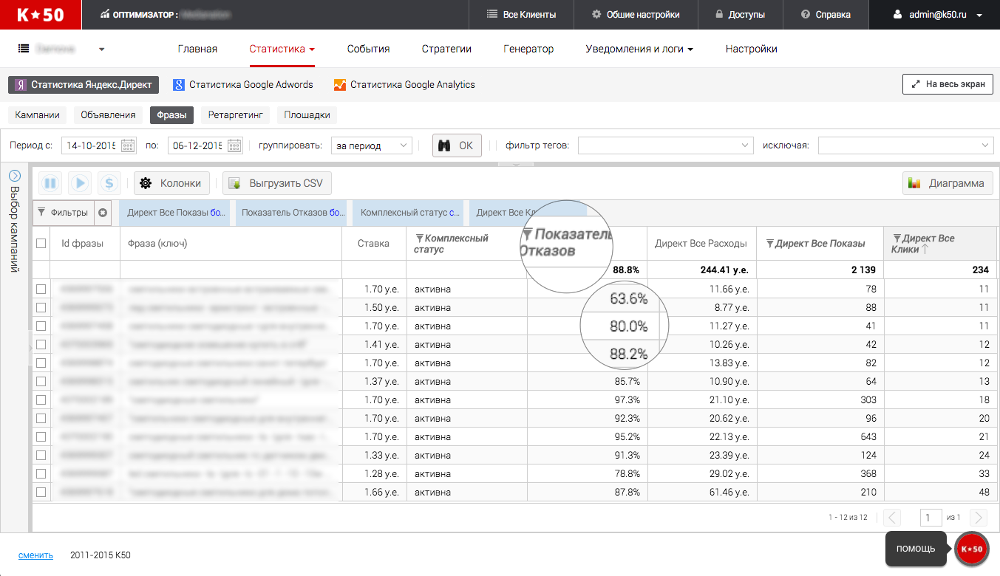
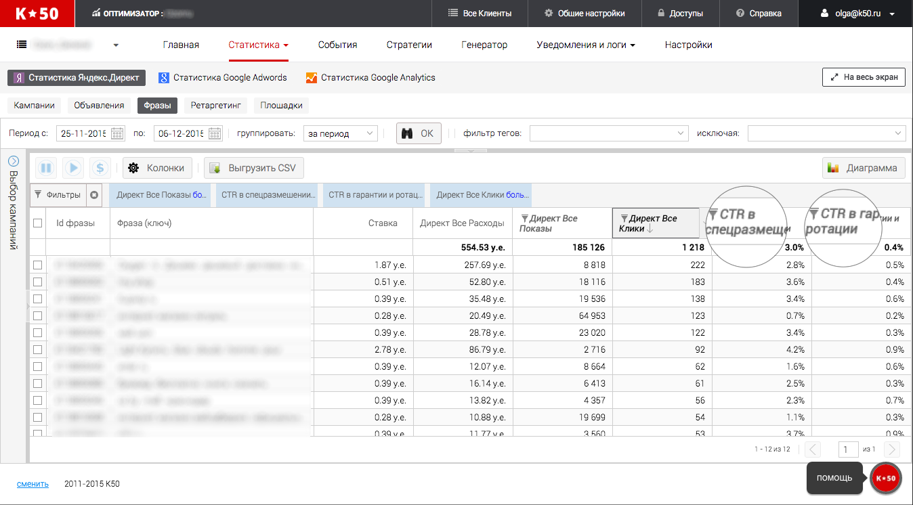

Фильтры в К50:Статистике для поиска неэффективных ключевых слов
K☆50:Статистика — сервис, который позволяет собирать в одной таблице данные из рекламных систем (Яндекс.Директ и Google Adwords) и систем аналитики (Google Analytics, call-tracking сервисы, CRM). Помимо анализа данных, можно также производить простейшие действия над рекламными объектами: остановка/запуск, изменение ставки.
Одно из достоинств сервиса в том, что он позволяет задавать фильтры для таблицы со статистикой и таким образом находить эффективные и неэффективные рекламные материалы. В этой статье мы расскажем именно о таких фильтрах. Хотим сразу предупредить, что мы не рекомендуем совсем отключать неэффективные ключевые слова/объявления. Если вы видите, что не попадаете в KPI, лучше снизить ставку на 50% или больше, это позволит сохранить показы объявления, пусть и на более низких позициях.
Синхронизация данных из Google Analytics и Яндекс.Директ
Прежде всего важно убедиться, что данные на всех уровнях собираются корректно. Нам часто пишут пользователи с вопросом несостыковки данных из рекламных и веб-аналитических систем. В большинстве случаев причина тому — отсутствие обязательных параметров в метке. Для проверки перейдите на вкладку “Объявления” и выведите следующие колонки: “Кампания” , “Заголовок объявления”, “URL объявления”, “Комплексный статус.

Задаем фильтр на колонку “URL объявления” - , “Комплексный статус” - идут показы. В колонке “Кампания” можно посмотреть в каких кампаниях есть объявления без меток и такие объявления нужно обязательно переметить.
Напоминаем, что для корректной работы сервиса ваши utm-метки должны содержать в себе следующие параметры:
Директ:
{phrase_id} {retargeting_id} {campaign_id}
{ad_id} {source_type} {source}
Adwords:
{targetid} {campaignid} {adgroupid}.
Поиск фраз без транзакций/звонков, но с высоким расходом
Данный фильтр поможет быстро найти ключевые слова с высоким расходом, но не приносящие транзакций или звонков. Их также можно будет сразу остановить или понизить ставку.
Для работы над этой задачей вам понадобятся следующие колонки в таблице: “Фраза(ключ)”, “Ставка”, “Достижение цели “название цели”, “Комплексный статус”, вы также можете добавить и другие колонки для удобства.
Такой фильтр мы рекомендуем настраивать в зависимости от следующих характеристик кампании: брендовая, товарная или категорийная;регион показа; место размещения рекламы (РСЯ/Поиск). Разные типы кампаний следует рассматривать в отдельности, так как расход у них будет разный. К примеру, в товарных кампаниях скорее всего расход меньше, чем в категорийных.

Сперва, при помощи левой навигации, мы выбрали кампании, которые нам интересны — взяли категорийные кампании на поиск (не содержат РСЯ в названии, но содержат слово категория). Далее настроили фильтры по трем столбцам:
- “Показы” - больше 0
- “Расход” - больше 30 у.е.
- “Достижения цели” - 0
- “Комплексный статус” - активна
Имейте ввиду, что при выборе критичного расхода стоит опираться на вашу тематику и частотность ключевых слов кампании.
Если у вас подключена одна из call-tracking систем, например К50:Трекер, вы можете использовать эти данные для поиска ключевых слов, которые не приносят звонков.
Логика данного фильтра такая же, как и предыдущего, отличие лишь в метриках. В этом случае мы ищем не выполнение целей из Google Analytics, а звонки. За звонки отвечает метрика “CRM: Количество заказов”.

Поиск фраз с высоким CPO или с высокой стоимостью звонка
Метрики CPO по умолчанию нет в K☆50:Статистика, однако в сервисе есть функционал, который позволяет создавать собственные метрики для расчета. Поэтому прежде всего вам необходимо создать настраиваемую метрику для расчета CPO, формула выглядит так:
- для Яндекс.Директ = [Директ Все Расходы]/[Достижения цели "название цели"]
- для Google AdWords =[AdWords Все Расходы]/[Достижения цели "название цели"]
Столбцы, которые нам понадобятся для работы: “Ключевое слово”, “Ставка”, “Комплексный статус”, “Достижение цели “название цели”, “CPO”.

С помощью левой навигации мы отфильтровали интересующие нас кампании. Далее настроили фильтр по трем столбцам:
- "Все Показы" > 0
- "CPO" > например 150
- “Достижение цели “название цели” >= 1
Если у вас подключен один из сервисов call-tracking, вы можете рассчитать стоимость каждого звонка и найти ключевые слова, которые приносят слишком дорогие звонки.
Прежде всего необходимо создать настраиваемую метрику для расчета стоимости звонка, формула выглядит так:
для Яндекс.Директ =[Директ Все Расходы]/[CRM: Количество заказов]
для Google AdWords =[AdWords Все Расходы]/[CRM: Количество заказов]
Далее необходимо настроить фильтры по трем столбцам:
- “Комплексный статус” - идут показы
- “Цена звонка” > например 200
- “CRM: Количество заказов” >= 1
Поиск ключевых слов с высоким bounce-rate (показателем отказов)
Высокий показатель отказов — очень распространенная проблема на сайтах, которая, в том числе, снижает коэффициент конверсии. Причин может быть множество:
- несоответствие запроса посадочной странице;
- всплывающие поп-апы и рекламные окна;
- скорость загрузки страницы.
Отметим, что нет общепринятого “высокого” и “низкого” показателя отказов, так как многое зависит от тематики сайта, его вида (портал, интернет-магазин, сайт-визитка) и от типа трафика. Поэтому при поиске таких слов ориентируйтесь на ваш средний показатель качества по сайту.
Необходимые для работы колонки: "Ключевое слово", "Ставка", "Показатель отказов", "Комплексный статус", "Клики".

Мы отфильтровали таблицу по колонкам:
- “Комплексный статус” - активна
- “Показатель отказов” > 60%
- “Все Клики” >10.
Поиск ключевых слов с низким CTR
Низкий CTR влияет на стоимость клика, а также может сказать об общей релевантности объявления по отношению к ключевому слову. CTR сильно разница в зависимости от рекламного блока. В K☆50:Статистика у вас есть возможность посмотреть раздельно CTR в спецразмещении и в гарантии. В данном примере мы находим слова с CTR ниже 1% в гарантии или ниже 5% в спеце и с количеством кликов больше 50.
